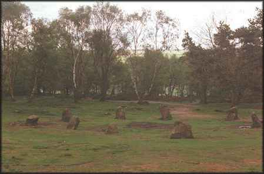
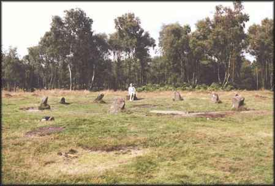

Nine Ladies
Nine Ladies

This stone circle dates from the Bronze Age, which was between 2000 and 1500 BC. It was at a time when the Derbyshire hills were being cleared of their natural oak and alder forest. The existing tree cover is a modern encroachment on the resulting moorland. The stones stand on the inner edge of a low bank, which is interrupted by an 'entrance'. There are traces of a central mound, which was once much bigger. The large flat stone, now exposed by erosion, was once buried in the low bank surrounding the circle of the nine upright stones. To the south-west is an outlying stone known as the King stone.


The monument had a religious significance to those who built it. Members of this community were buried below the scores of mounds occupying the moorland to the south of this site.

Though a potentially good site, it has suffered from the attention of New Age Travelers; trees have been cut down, and there are often tents in various places around it. The view here is the only one I could get which did not have a tent in it!! The surrounding woodland is beautiful, with lots of secluded places where quiet contemplation is possible.